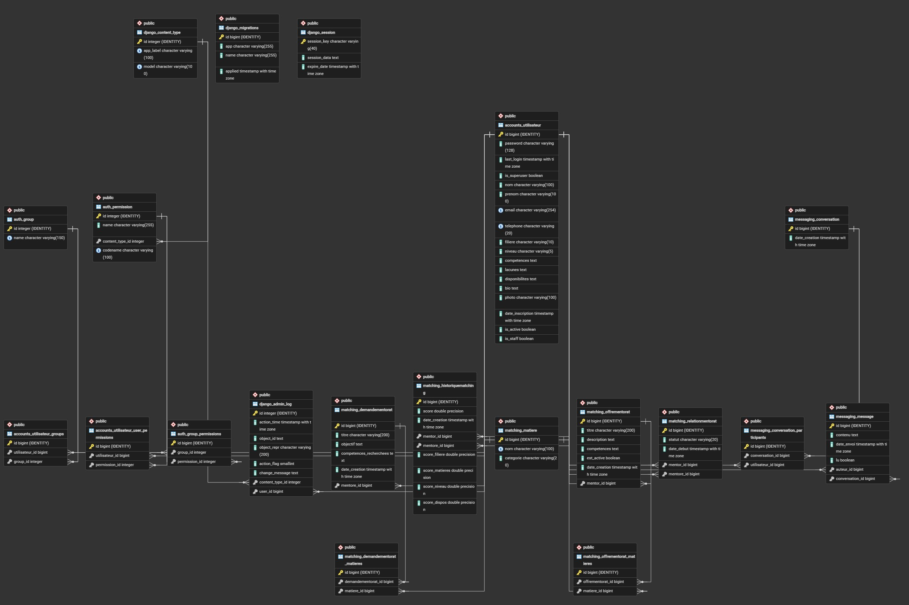

Supervision : M. Ratheil HOUNDJI
Encadrants : M. Armand ACCROMBESSI & Mme Maryse GAHOU
Année académique : 2025-2026
Établissement : Institut de Formation et de Recherche en Informatique (IFRI) — Université d'Abomey-Calavi
IFRI_MentorLink est une application web de mise en relation entre mentors et mentorés au sein de l'IFRI. Elle répond à un besoin concret d'entraide académique et professionnelle entre étudiants. Chaque utilisateur crée un profil détaillant ses compétences, ses lacunes, sa filière, son niveau et ses disponibilités. Il peut publier des offres ou des demandes de mentorat. Un algorithme de matching calcule automatiquement la compatibilité entre mentors et mentorés et propose les associations les plus pertinentes. Une messagerie intégrée permet ensuite de coordonner les sessions.
Le groupe est organisé en trois binômes thématiques. La communication quotidienne s'est faite via WhatsApp, et la gestion du code source via GitHub uniquement. Le dépôt a été administré par EDAH Jean de Dieu. Deux séances d'encadrement avec l'équipe pédagogique ont eu lieu durant le projet.
| Binôme | Membres | Responsabilité |
|---|---|---|
| 1 | TOUDONOU Jijoho Lisette, FOLLY Godwin Isaac Prince | Messagerie, notifications, rafraîchissement automatique |
| 2 | AHOUSSINOU Awignandji Euphrasie, HOUNTONDJI TONAKPON Leonel Desmond | Authentification, profils, gestion des comptes |
| 3 | ASSOGBA Mahouna Fidélia, EDAH Jean de Dieu | Algorithme de matching, tableau de bord, recherche |
Le projet a été réalisé en 10 jours selon une progression logique :
L'application suit une architecture client-serveur avec Django comme framework backend et un rendu côté serveur via le système de templates Django.
Navigateur (HTML/CSS/JS)
↕ Requêtes HTTP
Django (Views + Templates)
↕ ORM Django
PostgreSQL (Base de données)
| Application Django | Rôle |
|---|---|
| accounts | Gestion des utilisateurs, profils, authentification |
| matching | Offres, demandes, algorithme de matching, relations mentor-mentoré |
| messaging | Conversations et messages privés |
| mentorlink | Configuration principale (settings, URLs) |
La fonction calculer_score calcule un score de compatibilité basé sur quatre critères pondérés :
| Critère | Poids |
|---|---|
| Compatibilité des matières / compétences | 40% |
| Proximité des filières | 25% |
| Compatibilité des disponibilités | 20% |
| Proximité du niveau d'études | 15% |
Les résultats sont triés par score décroissant et présentés à l'utilisateur avec le détail de chaque critère.
La base de données PostgreSQL est composée des tables suivantes :
| Table | Description |
|---|---|
| accounts_utilisateur | Profils utilisateurs (nom, prénom, email, téléphone, filière, niveau, compétences, lacunes, disponibilités, photo) |
| matching_offrementorat | Offres de mentorat publiées par les mentors |
| matching_demandementorat | Demandes de mentorat publiées par les mentorés |
| matching_historiquematching | Résultats des matchings avec scores détaillés |
| matching_relationmentorat | Relations mentor-mentoré acceptées |
| matching_matiere | Liste des matières L1 IFRI disponibles |
| messaging_conversation | Conversations entre utilisateurs |
| messaging_message | Messages échangés dans chaque conversation |

# 1. Cloner le dépôt git clone https://github.com/[username]/PIL1_2526_31.git cd PIL1_2526_31 # 2. Créer et activer l'environnement virtuel python -m venv env env\Scripts\activate # Windows source env/bin/activate # Linux / Mac # 3. Installer les dépendances pip install -r requirements.txt # 4. Configurer la base de données dans settings.py # (NAME, USER, PASSWORD, HOST, PORT) # 5. Appliquer les migrations python manage.py migrate # 6. Lancer le serveur python manage.py runserver
L'application est accessible à l'adresse http://127.0.0.1:8000
# 1. Créer un compte sur railway.app # 2. Connecter le dépôt GitHub au projet Railway # 3. Ajouter un service PostgreSQL depuis le dashboard # 4. Configurer les variables d'environnement : # DATABASE_URL, SECRET_KEY, DEBUG=False, ALLOWED_HOSTS # 5. Railway déploie automatiquement à chaque push sur main
Le projet IFRI_MentorLink a permis au groupe 31 de mettre en pratique les compétences acquises en première année de formation à l'IFRI : développement web, conception de bases de données relationnelles, programmation Python avec Django et collaboration avec Git. En dix jours, l'équipe a livré une application fonctionnelle couvrant les trois modules exigés. L'organisation en binômes, la communication quotidienne et la rigueur Git ont été les clés d'une collaboration efficace malgré la contrainte de temps.